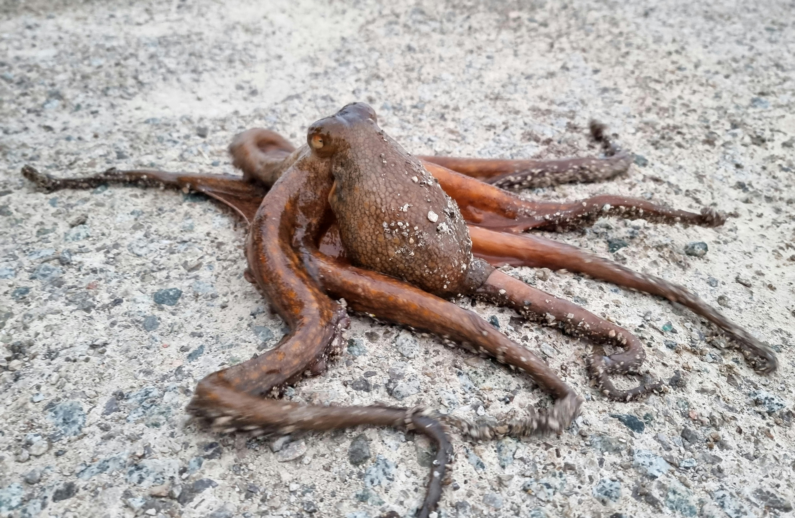
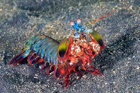
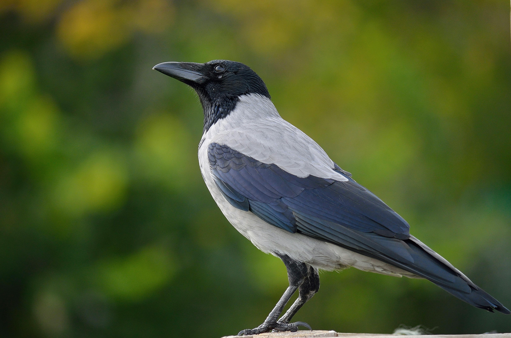

Octopus Photo

Octopuses have three hearts — two pump blood to the gills, one pumps it to the body. When they swim, the main heart actually stops beating, which is why they prefer crawling; swimming exhausts them.

Mantis shrimp can punch with the force of a bullet — their club-like appendages accelerate faster than a .22 caliber gun. They can shatter aquarium glass and see 16 types of color receptors (humans have 3).

Crows hold grudges and pass them down generations — they recognize individual human faces, and if you wrong one, it will warn its offspring and flock about you specifically. Entire crow communities have been known to harass a person for years.

A Tardigrade (water bear) can survive basically anything — the vacuum of space, radiation 1,000x lethal to humans, temperatures from -272°C to 150°C, and pressures 6x deeper than the ocean floor. They do it by essentially turning themselves off and entering a death-like state called cryptobiosis.

Elephants are the only animals known to have death rituals — they return to the bones of deceased relatives, gently touching the skulls and tusks with their trunks. They show the same behavior toward elephant remains they've never met before, but not toward bones of other species.